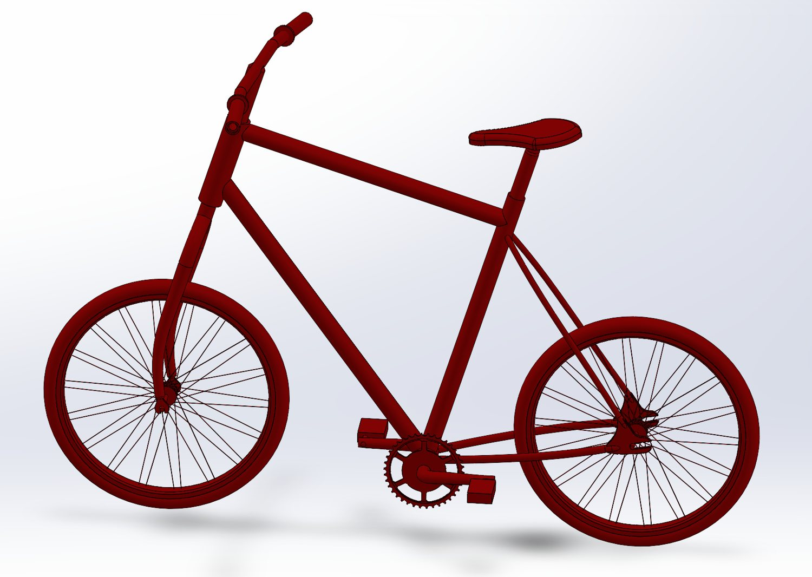
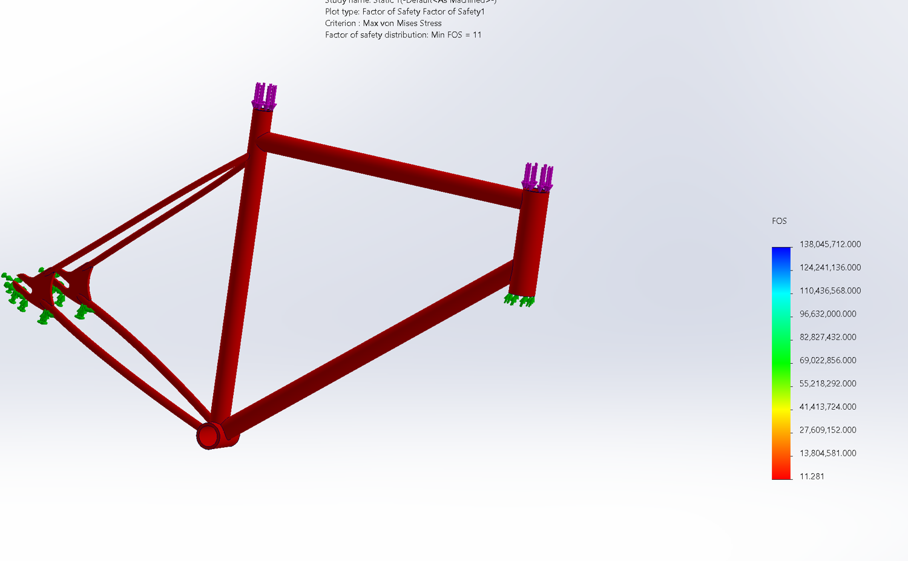
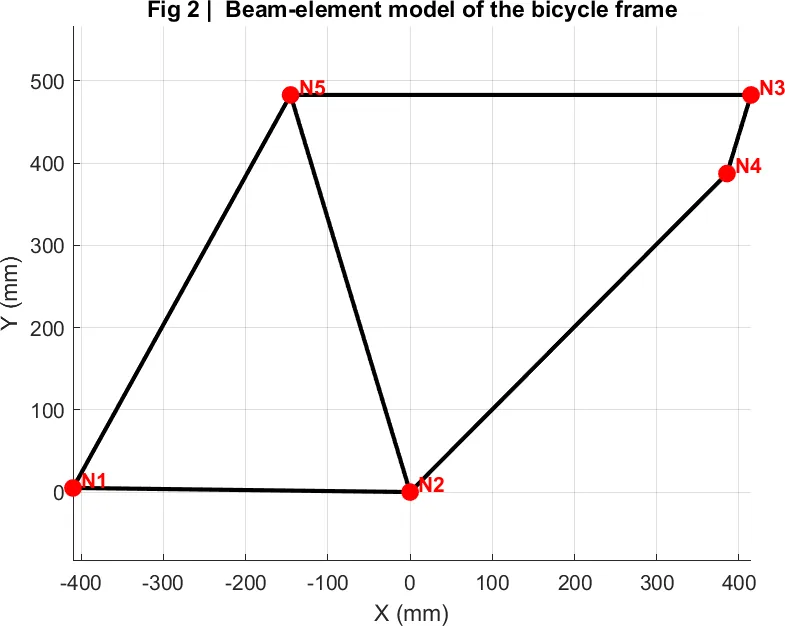
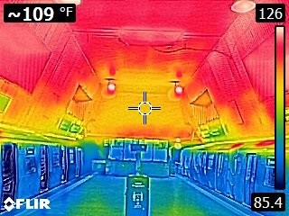
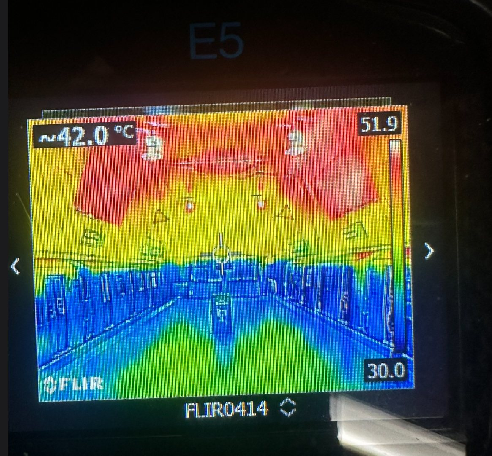
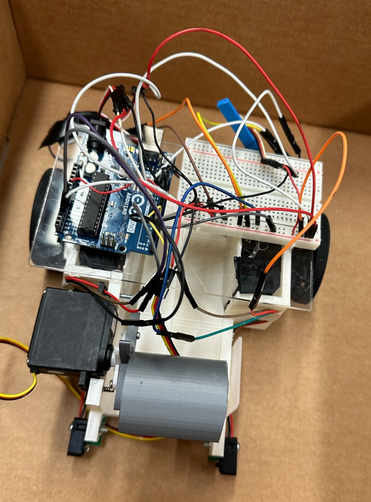
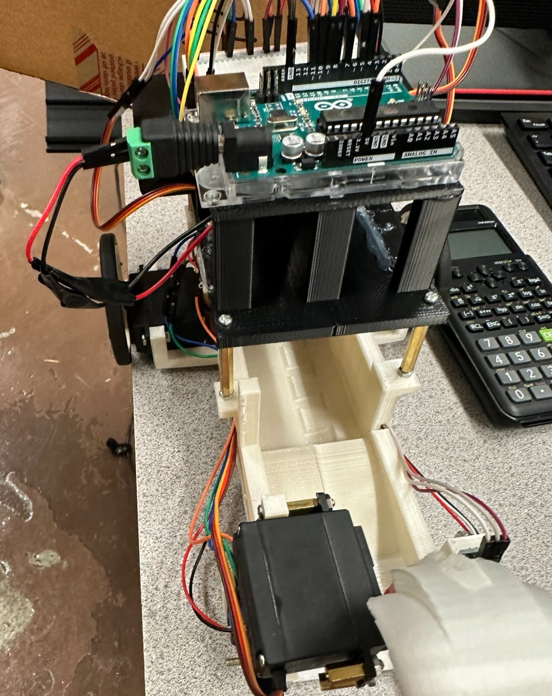
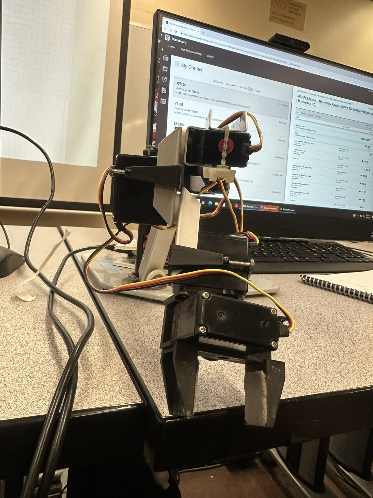
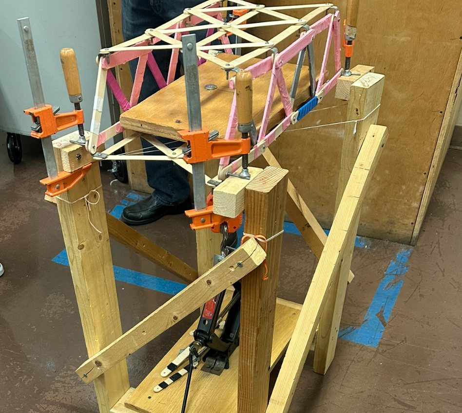
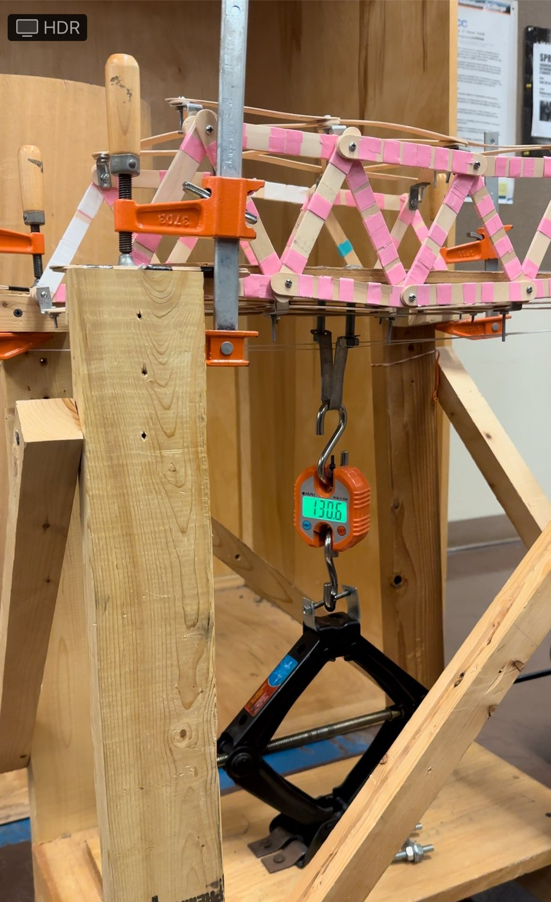

Design, simulation, and the check that they agree.
Senior mechanical engineering student at the Grove School of Engineering. I take a design from CAD through hand calculation and simulation, then reconcile the two, across CFD, structural FEA and fatigue, thermal systems, and Arduino-based mechatronics.
Every project below is documented with the numbers that came out of it. Where a simulation was run, there is a hand calculation next to it. The point of the work was to make the two agree, and to say plainly where they don't.
ME 43600Aero-Thermal-Fluids LaboratorySummer 2026 · Individual
External-flow CFD study of a NACA 2412 wing section
Five RANS simulations of the Cessna 172 wing profile, run at the aircraft's own published flight conditions rather than arbitrary speeds.
Problem
Characterize lift and drag on a rigid body in external flow, with convergence, force, pressure, velocity, and turbulence results reported for every run, on a cloud CFD account capped at ten simulations, so each setup had to be right the first time.
Approach
Modeled the section in SolidWorks at c = 0.2 m, then caught an import error (normalized coordinates had come in at 1 mm chord) by measuring face area and diagonal, and corrected it with a uniform 200× scale.
Chose k–ω SST over k–ε because the ω-equation resolves the near-wall region, which governs adverse pressure gradient and separation onset on an airfoil approaching stall.
Set slip conditions on the outer domain walls: an airfoil flies in free air, so the standard no-slip road-surface example does not apply and would grow fictitious boundary layers on the domain boundary.
Imposed angle of attack at the inlet so geometry and mesh stayed identical across all five runs.
Validated against published two-dimensional NACA 2412 polars, then explained the disagreement instead of hiding it.
Result
Drag coefficient fell 21% across the Reynolds sweep (0.01963 → 0.01553) while lift coefficient stayed flat, so the dimensional forces tracked V² to within 1%: lift grew from 3.37 N to 40.71 N for a 3.47× speed increase, against a predicted 12.0×. Best L/D was 15.2.
The simulated lift-curve slope (≈0.013/deg) sits well below the 2-D value (≈0.11/deg). That is not an error: the model is a finite wing of aspect ratio 1 with free tips, and the measured drag rise above α = 0° matches the induced-drag estimate Cl²/πAR to the same order, confirming the three-dimensional reading.
ME 37100Computer-Aided DesignSpring 2026 · Individual
Complete bicycle: design and structural validation for a 100 kg rider
A full bicycle modeled in SolidWorks, with every load-bearing part checked twice, once by hand and once by FEA, with the two results reconciled.
Problem
Can a junior engineer, using only undergraduate beam theory, FEA, and materials selection, deliver a bicycle that safely carries a 100 kg rider? Success meant FoS ≥ 2 against yield on every static study, a buckling load factor ≥ 4 on the fork, and FoS > 1 against ultimate strength for the rim under impact.
Approach
Modeled frame, fork, handlebar, saddle and seatpost, drivetrain, and wheels on a real hardtail geometry (73° head tube, 560 mm top tube, 980 mm wheelbase), then assembled them to confirm integration.
Redesigned the frame in Ti-6Al-4V STA for fatigue performance and corrosion immunity, keeping standard alloys elsewhere.
Wrote a 2-D plane-frame stiffness-matrix solver in MATLAB and ran it against the SolidWorks beam-element results to validate the FEA setup independently.
Matched the study type to the physics: static for most parts, Euler buckling for the compression-dominated fork, and a 150 mm drop test for the wheel, since curb strike is what actually sizes an aluminum rim.
Result
Every component cleared its target. The binding case was the wheel under impact at FoS ≈ 1.08 against ultimate tensile strength; everything else landed comfortably above the FoS ≥ 2 yield target. Hand-calculation and FEA differences stayed inside the expected 2-D-versus-3-D gap, which confirmed both the load paths and the simulation setup.
SolidWorks 2026SolidWorks SimulationMATLABBuckling & drop test
Targets & outcomes
Design rider mass
100 kg
Frame material
Ti-6Al-4V STA
Frame yield strength
827 MPa
Static FoS target
≥ 2.0
Fork buckling target
BLF ≥ 4
Wheel drop height
150 mm
Worst case (rim)
FoS 1.08

The full assembly in SolidWorks 2026: frame, fork, drivetrain, wheels and cockpit, mated to confirm integration.

Frame FEA under the 100 kg rider load.

The MATLAB beam model used as the independent check.
ME 47200Mechanical Systems DesignSpring 2026 · Team of 2
Cantilevered jib crane: beam, weld, and bolted moment connection
A 50 kN wall-mounted jib designed for ten years of service, and statically indeterminate, so the redundant reaction had to be recovered before anything could be sized.
Problem
Size a cable-supported cantilever jib to lift 50 kN through 25 fully loaded cycles a day for ten years (91,250 cycles) at a factor of safety of 1.5 against both yielding and fatigue, then design the weld and bolt group that carries it into the wall.
Approach
Recognized the structure as statically indeterminate to degree 1, took the cable tension as the redundant, and solved it by Castigliano superposition, giving T = 87.5 kN, larger than the load itself, which forces the wall to anchor the beam down at 37.5 kN.
Placed the load at the free end as the deliberate worst case, then found the critical section at the cable rather than at the wall.
Ran the fatigue check in the finite-life regime with Marin factors, deriving the size factor through the equivalent-diameter approach for a non-rotating I-beam in bending.
Checked the weld for fatigue as well as yield: a 5 mm fillet passes statically but fails fatigue at n = 1.11, so the specification went to 8 mm.
Result
A UB 356 × 171 × 51 section clears both checks (ny = 1.67 static, nf = 1.76 Goodman). Hand calculation and FEM agreed to 0.5% at the critical section on a mesh converged to 1.5%. A deliberate sabotage run with the cable removed produced σVM ≈ 500 MPa and 200 mm of tip deflection, confirming the cable is doing exactly what the analysis said.
FEM von Mises along the beam. The peak sits at the cable support, not the wall, exactly where the hand calculation put it, and the section that sized the member.
ME 43000Thermal Systems Analysis & DesignFall 2025 · Individual
Single-stage impulse turbine for a 1600 psi steam cycle
A zero-reaction control stage designed from Rankine cycle conditions down to blade height, then swept across nozzle angle to prove the design point was the right one.
Problem
Design the high-pressure control stage of a steam turbine for throttle conditions of 1600 psi and 1000 °F at 345.7 lbm/s, extracting a 26 Btu/lbm isentropic enthalpy drop, with stage loading ψ < 3 and stage efficiency at or above 90%.
Approach
Worked a 15-step mean-line design: spouting velocity from the enthalpy drop, blade speed from the blade-speed ratio, velocity triangles at nozzle and rotor exit, then flow areas, blade height, chord, spacing, and blade count.
Fixed rotational speed at 3600 rpm because the rotor couples directly to a two-pole 60 Hz generator, which, with the target blade speed, sets the mean radius rather than leaving it free.
Sized blade spacing with the Zweifel criterion and carried a blade friction factor through, so the efficiency figure is an estimate rather than an ideal.
Swept nozzle outlet angle from 8° to 15° to map the loading-versus-efficiency trade and confirm the chosen 10.5° sits in the optimal band.
Result
The design point met every target, with a mean radius of about 1.18 ft (28.4 in mean diameter, reasonable for a high-pressure first stage) and roughly 0.8 in of blade height at mid-span. The parametric sweep showed why: below 8° the loading climbs toward the stress limit, above 12° the efficiency falls off.
CUNY–MTAResearch Intern, NYC College of TechnologyJun 2024 – Jun 2025
Monitoring heat in the New York City subway system
A year of field measurement across four boroughs, turned into a data pipeline and a finding that air conditioning helps far less than riders assume.
Problem
Heat waves are intensifying, and underground transit is among the most exposed infrastructure in the city, but nobody had characterized how much hotter platforms actually get, or whether stations with cooling systems were meaningfully better for riders and transit workers.
Approach
Collected temperature and relative humidity with sensors and thermal infrared cameras across underground stations in the Bronx, Brooklyn, Manhattan, and Queens, over multiple seasons.
Owned the data pipeline: cleaning, time alignment across stations and collection dates, and visualization in Python and MATLAB.
Learned QGIS to build spatial maps of the findings, so the pattern could be read borough by borough instead of station by station.
Coordinated line coverage and thermal-camera logistics with the student team so collection windows stayed comparable between rounds, the constraint that made the seasonal comparison valid.
Result
Platforms run consistently hotter and more humid than the surface. Queens and Brooklyn had the hottest platforms; the Bronx was coolest but most humid; Manhattan managed both high heat and high humidity despite having air conditioning. Cooled stations averaged 87.1 °F in summer against 95.11 °F elsewhere. The difference is real, but smaller than the presence of AC suggests. Thermal imagery also showed structural beams transmitting heat down onto platforms.
Presented at the American Geophysical Union meeting in Washington, D.C. and the American Meteorological Society meeting in New Orleans.
PythonMATLABQGISThermal IR imagingField instrumentation
Findings
Boroughs surveyed
4
Fall heat index
80.18 °F
Summer heat index
93.11 °F
Summer, with AC
87.1 °F
Summer, without
95.11 °F
Hottest platforms
Queens, Brooklyn
Most humid
Bronx
Funding
NOAA CESSRST
NA16SEC4810008
NSF REU
AGS-2150432
NSF IUSE
ICER-2023174
Pinkerton Foundation
HIRES

FLIR capture on a platform: ~109 °F at the ceiling against 85 °F at track level. The ceiling structure reads hottest, the heat path the study set out to document.

On the camera: 42 °C at a station.
Bulldozer MK IBMCC Engineering InternshipSummer 2023 · Team of 3
Fully 3D-printed autonomous robot with line following and ball collection
A ground-up build: chassis designed in Fusion 360 and printed in PLA, sensors and servos driven by an Arduino UNO, delivered inside a fixed parts budget.
Problem
Design and build an autonomous robot that follows a black tape line, collects ping-pong balls along the route, and dumps them at the end, within imposed limits on dimensions and mode of operation, and with cost and safety treated as design constraints.
Approach
Designed the chassis in Fusion 360 around the components it had to carry (battery pack, breadboard, servos, sensor mounts, ball hopper), then printed the whole structure in PLA.
Wired IR obstacle-avoidance sensors and an IR break-beam sensor to sequence operation: the sensors decide when the robot turns, when it grabs, and when it releases.
Programmed the Arduino UNO as a set of functions inside a continuous loop, so line following, collection, and dumping run as one uninterrupted routine.
Iterated on the first prototype: the original chassis sat too high off the ground to pick up a ball, so the team designed and attached a front ramp.
Result
The robot ran the course autonomously: following the tape, curving where needed, collecting balls, and dumping them at the finish. The build came in around $185 in parts. The team named PID control for the line-following loop as the next step, since bang-bang behavior was the limit on precision.
Fusion 360FDM 3D printingArduino UNOC/C++IR sensors
Build sheet
Controller
Arduino UNO REV3
Drive servos
2 × MG995 360°
Actuator servos
MG995, SG90
Sensing
IR × 2, break-beam
Power
8×AA, 12 V
Structure
PLA, printed in-house
Parts cost
≈ $185

Bulldozer MK I assembled: printed chassis, Arduino UNO, drive servos, and the collection hopper.

Controller and servo wiring.
ESC 111Elements of Engineering Design, BMCCFall 2023 · Team of 4
Six-degree-of-freedom robotic arm: pick-and-place and coordinate mapping
Scripting a six-servo arm to move a cube between defined positions, then deriving the mapping between the arm's own coordinates and physical space.
Problem
Drive a six-servo robotic arm to pick up a cube and place it at two different positions from a calibrated zero pose. Separately, establish the relationship between robot coordinates and physical coordinates, and validate the formula relating Z to X and Y.
Approach
Calibrated all six servos to a zero reference pose, then built the motion script two ways and compared them: teaching positions through the manual controls and saving the result, then writing servo values directly in code.
Wrapped the sequence in a macro loop so the pick-and-place cycle could repeat a specified number of times.
Simulated the intersection of the arm's work envelope with the Oxy plane and with a vertical plane at zero elevation angle, and checked the derived Z(X, Y) relationship against those intersections.
Result
The task completed reliably with the manually taught script. The real lesson was redundancy: the same end position is reachable through more than one combination of joint angles, so precision came down to which combination you chose, not to the code being complicated.
The arm holding the cube at the pick position. The same end point is reachable through more than one set of joint angles. Choosing which was the hard part.

Bench setup and control station.
ESC 111Elements of Engineering Design, BMCCFall 2023 · Team of 6
Tongue-depressor bridge: SAP2000 truss analysis, then a real load test
Analysis first, construction second. The bridge held 152 lb against a 150 lb requirement, with no member failures.
Problem
Design and build a bridge from tongue depressors, nuts, and bolts that carries a 150 lb load without any structural member breaking. The design had to be justified by analysis before a single stick was glued.
Approach
Built the truss as individual frames in SAP2000 and read out the axial force in every member, using sign to separate tension from compression.
Studied how force distribution changes with member angle at constant applied load, and exploited geometric and load symmetry so the whole structure did not have to be scrutinized joint by joint.
Tested a single stick to establish its allowable force, then worked backward from the member forces to the number of sticks each member needed.
Carried the analysis through progressive stages (one-, two-, and three-bay trusses first), comparing theoretical against experimental forces before committing to the final geometry.
Result
Members 1 and 11–15 were identified as the compression members, a single stick was rated at 16.96 lb, and the analysis called for 117 sticks. Only one change was needed between analysis and built structure. Under test it carried 152 lb with no member failures, which made SAP2000's prediction as much the result as the bridge was.
SAP2000Truss analysisMethod of jointsPhysical load testing
Test record
Design load
150 lb
Load carried
152 lb
Member failures
0
Single-stick capacity
16.96 lb
Sticks required
117
Compression members
1, 11–15

The load test. 152 lb hanging at mid-span against a 150 lb requirement, with no member failures.

Bolted truss members.
ME 46100Engineering MaterialsSpring 2026 · Team of 3
Materials selection for bicycle frames: why four material classes coexist
Most structural applications settle on one material class. The bicycle industry runs four at once. This project used Ashby indices to explain why that segmentation is rational.
Problem
A road frame sees peak bottom-bracket loads above 1,500 N and millions of fatigue cycles, while the designer minimizes mass, controls compliance, and keeps cost accessible. No single material wins on every axis, so the question is not "which is best" but "which is best for which segment."
Approach
Characterized the loading environment member by member: axial in seat and down tubes, bending in the top and down tubes, torsion in the rear triangle, cyclic fatigue at every welded or bonded junction.
Traced each material's macroscopic properties to its microstructure and crystal structure, then examined how processing reshapes that microstructure.
Applied Ashby performance indices (E/ρ for axial stiffness, E1/2/ρ for bending) rather than comparing raw property values.
Result
The index ranking reproduces the market. Steel is the only class with a true endurance limit and owns touring and custom builds; aluminum wins stiffness per dollar and owns the mid-range; titanium is corrosion-immune and long-lived at roughly 30× the tubing cost, so it stays premium; CFRP has the best specific stiffness but carries barely-visible impact damage and poor repairability, so it stays in racing.
Residential structural design and material cost analysis
A first structural design done end to end: load path, member sizing in industry software, and a full material budget for a 30 × 28 ft house.
Problem
Take a residential structure from load definition through member sizing to a costed bill of materials, working under real construction codes rather than textbook idealizations.
Approach
Worked through dead, live, dynamic, and wind loads in PSF and PLF, separating point loads on columns from area loads on joists and beams, and traced the load path floor → beams → girders → columns → foundation → soil.
Sized members in WoodWorks, then moved to Sizer for the full floor plan, and compared the two tools directly.
Designed beams, columns, joists, walls, and stairs against AASHTO, IBC, and ACI provisions.
Built the cost analysis from the design, and stated its limit plainly: materials only, no labor.
Result
A complete 30 × 28 ft structural design with a $98,766 material budget, broken down by member type: columns dominated at $46,400, roughly three times the beam cost. This was also the project that moved me from civil toward mechanical.
WoodWorksSizerAASHTO / IBC / ACICost estimation
Cost breakdown
Footprint
30 × 28 ft
Columns
$46,400
Walls
$24,432
Beams
$16,300
Joists
$11,634
Total materials
$98,766
Leadership
The IMPACT work is engineering of a different kind: a system with 25–30 people in it, a weekly deadline that cannot slip, and a failure mode measured in someone not getting paid.
IMPACTMentoring Program, BMCCJan 2024 – Jan 2026
Supervising mentor, timekeeper, and HR coordinator
Promoted from peer mentor into the role that keeps the program running: payroll accuracy, onboarding compliance, and the mentors themselves.
The system I owned
Reviewed and audited weekly timesheets for 25–30 student employees, catching errors before they reached payroll, across two and a half years of week-by-week records.
Ran onboarding end to end, including the hardest case: F-1 international students without a Social Security Number, walked step by step through ISSO work authorization, the SSA appointment, and final employment verification.
Served as the liaison between mentors, program staff, and college administration, the first point of contact when something in a mentor's role went wrong.
Built the tracking systems and operational reports the program ran on, and wrote the guide new mentors are onboarded with.
How I led
I set the expectations with my circle in the first session: deadlines exist for a reason, everyone is a gear in the same system, decide for yourself what you share with mentees, come to me first, and tell me what I could do better. I meant the last one. I asked my mentors for written feedback on my own performance that same session, before they had any reason to trust me with it.
Mentoring, one student at a time
Alongside the operations I carried my own mentees: rebuilding a student's next-semester schedule after a bad advisement path that would have cost him nearly a year; working through the financial case for summer classes with another, scholarships and part-time work included; taking a call from a third during finals week when meeting in person was impossible.
The mentor team. Coordinating this group (scheduling, onboarding, payroll) was the job.With mentees and mentors on campus.A program event. Community building was half of what made the mentoring work.
Publications
The field measurements behind the conference posters below became a peer-reviewed journal paper in September 2026.
Peer-reviewedBuilding and Environment · ElsevierSeptember 2026 · Open access
The Hidden Heatwave: Thermal Hazards in the New York City Subway System
A. R. Bah, M. Muntaha, L. Metlitsky, C. P. Vasquez, T. Ayala, I. Morel Lopez, S. Larose, K. Ditsch, K. Nielsen, S. Sharma, R. Blake, H. Norouzi
The study
Thermal conditions on New York City subway platforms, measured inside the stations themselves rather than inferred from street-level weather. Riders wait underground in air that the surface forecast does not describe, and the gap between the two is the point.
My contribution
Field measurement and data reduction. I recorded platform temperature and humidity at several stations across different operating periods, then cleaned the datasets and synchronized their timestamps in MATLAB and Python so runs taken on different days, by different loggers, could be read on one axis.
The alignment took the most time. Raw logger output from a subway platform drifts, and a sensor left on a bench reads nothing worth keeping. Checking a dataset before trusting any conclusion drawn from it is the habit the project left me with.
Field instrumentationMATLABPythonTime-series alignmentHeat indexNSF & NOAA funded
All from the CUNY–MTA subway heat project, presented as posters and translated from raw field data into something an audience of scientists could read in ninety seconds.
August 2024
NOAA CESSRST / CREST SymposiumSummer Bridge research presentation
New York, NY
December 2024
American Geophysical Union Annual MeetingPoster: Heating Monitoring in the New York Subway System
Washington, D.C.
January 2025
American Meteorological Society Annual MeetingPoster presentation, subway thermal environment
New Orleans, LA
Spring 2025
CUNY–MTA program research showcaseLead author, Queens line poster
New York, NY
Photos from the conferences (10)
AGU 2024, Washington D.C. Walking a visitor through the results.AGU 2024. Fielding questions at the board.AGU 2024. One-on-one at the poster.The CUNY–MTA student team in the poster hall.AMS 2025, New Orleans. At the board with the badge on.The poster itself: methods, seasonal heat-index results, and the AC comparison.The cohort and faculty advisors.CY-PASS symposium, City College. Presenting Bulldozer MK I.With the team at the poster session.The Bulldozer poster: objectives, the ramp redesign, cost breakdown, and the control logic.
Background
Software & methods
CAD
Fusion 360 (advanced), SolidWorks, AutoCAD
Simulation
SolidWorks Simulation (static, buckling, drop test), SimScale CFD, SAP2000